| Click this button or choose Load Graph from the File Menu to open a dialog allowing selection of a graph file to load a graph from. The loaded graph will be displayed in a new Graph Editor window. |
| Click this button or choose Save Graph from the File Menu to open a dialog allowing
selection of a ".graph" file to save the current graph to. A snapshot image of the current graph can be saved, and a ".jpg" or ".gif" file by choosing 'Image Files' as the file type. |
|
Click this button or choose Preferences from the File Menu to open the JGraphEd preferences window. Various configuration options are available here. |
| Click this button or choose Info from the Info Menu to open a window showing information about the current graph. While the info window is open, any changes to the current graph will cause the information to be updated. This can be very slow if a large graph is open since planarity tests etc. are performed after every change. |
| Click this button or choose Log from the Info Menu to open a window showing a log of all the algorithms run on the current graph. The log entries are all shown in chronological order (top to bottom). The time taken to execute each algorithm is shown. Algorithms used as sub-routines for an algorithm can be listed (with respective times taken) by clicking on the selector next to the log entry. |
| Click this button or choose Undo from the Undo Menu to Undo the last Command. This command is disabled when there are no commands to undo. (Note: All commands except node/edge selection/unselection are undoable.) |
| Click this button or choose Redo from the Undo Menu to Redo the last Undone Command. This command is disabled when no undos have been performed, or they have all been redone. Using a new command after undoing a previous command will prevent the previous command from being redone. (Note: All commands except node/edge selection/unselection are redoable.) |
|
Click one of these buttons or choose Enable/Disable Undos from the Undo Menu to enable or disable the recording of undos and redos on the current graph. All undo/redo information is discarded when undos and redos are disabled. |
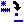 |
Click this button or choose Unselect All from the Edit Menu to unselect (dashed -> normal) all nodes and edges. |
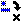 |
Click this button or choose Remove Selected from the Edit Menu to delete all selected (dashed) nodes and edges. |
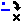 |
Click this button or choose Remove All from the Edit Menu to delete all nodes and edges. |
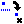 |
Click this button or choose Remove Generated from the Edit Menu to delete all generated (dashed) edges. (Note: Generated edges are those created by an operation, not directly by the user) |
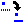 |
Click this button or choose Preserve Generated from the Edit Menu to preserve (dashed -> solid) all generated (dashed) edges. (Note: Generated edges are those created by an operation, not directly by the user) |
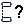 |
Click this button or choose Connectivity Test from the Test Menu to test whether the current graph is connected. A connected graph is a graph where every node has a path to every other node in the graph. |
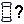 |
Click this button or choose Biconnectivity Test from the Test Menu to test whether the current graph is biconnected. A biconnected graph is a graph with no separator nodes. A separator node is a node through which every path between a pair of nodes must pass. |
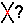 |
Click this button or choose Planarity Test from the Test Menu to test whether the current graph is planar. A planar graph is a graph which can be re-arranged or re-drawn without any edge crossings, while preserving node adjacencies. Planar graphs with n nodes can have at most 3n-6 edges. |
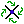 |
Click this button or choose Embedding from the Operation Menu to Embed the current graph. An embedding is an ordering of the edges around each node such that drawing the edges in this order would result in no edge crossings. This will only work for planar graphs.(Note: follow the Edge order display instructions above to see this ordering) |
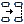 |
Click this button or choose Make Connected from the Operation Menu to Connect the current graph. The resulting graph will have a path from every node to every other node. (Note: The edges added by this operation are drawn with dashed lines) |
| Click this button or choose Make Biconnected from the Operation Menu to Biconnect the current graph. The resulting graph will have no separator nodes. A separator node is a node through which every path between a pair of nodes must pass. This will only work for planar graphs.(Note: The edges added by this operation are drawn with dashed lines) |
| Click this button or choose Make Maximal from the Operation Menu to triangulate (or make maximal planar) the current graph. The resulting graph with n nodes will have exactly 3n-6 edges and every face (including the outer-face) will be a triangle. This will only work for planar graphs.(Note: The edges added by this operation are drawn with dashed lines) |
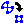 |
Click this button or choose Straight Line Embed from the Operation Menu to replace the current graph by its planar straight line grid embedding. A planar straight line grid embedding is an alternate, edge-crossing-free drawing of a planar graph with n nodes such that each of the nodes are placed at points in an n-2 by n-2 grid. This will only work for planar graphs. (Note: Generated (dashed) edges are removed by this operation) |
| Click this button or choose Default from the Display Menu to reset the display to the default state. (The color of all Nodes and Edges is reset to the default color.) |
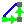 |
Click this button or choose Depth First Search from the Display Menu to display a depth first search
of the current graph starting from an arbitrary node. A depth first search is a tree-shaped traversal of all the nodes of the graph in depth first order. |
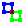 |
Click this button or choose Biconnected Components from the Display Menu to display each of the
biconnected components (sub-graphs) of the current graph in a different (random) colour. Separator nodes (drawn in red with a black X) are nodes through which every path between a pair of nodes must pass. A biconnected component is a subgraph of a graph which does not contain any (internal) separator nodes. |
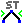 |
Click this button or choose ST Numbering from the Display Menu to display an ST-Numbering of each
of the biconnected components (sub-graphs) of the current graph in a different (random) colour. Separator nodes (drawn in red with a black X) are nodes through which every path between a pair of nodes must pass. A biconnected component is a subgraph of a graph which does not contain any (internal) separator nodes. An ST-Numbering is a numbering of every node in a biconnected sub-graph such that every node has a neighbouring node with a smaller ST-Number and a neighbouring node with a larger ST-Number. (Except for the first [label 1] and last [label n for n nodes] node which are neighbours). |
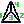 |
Click this button or choose Canonical Ordering from the Display Menu to display an Canonical Ordering or
Numbering of the current graph (after it has been made maximal planar). A canonical ordering (of planar graphs only) is a numbering of the nodes in a maximal planar graph such that removing each one (with incident edges) in this order will always leave a biconnected graph behind. |
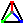 |
Click this button or choose Normal Labeling from the Display Menu to display a Normal Labeling
of the current graph (after it has been made maximal planar). A normal labeling (of planar graphs only) is a grouping of the edges in a maximal planar graph into three upward directed trees such that each node in the graph has a distinct path along the edges of each tree to each of the three nodes on the outer face (roots of each tree). At each node, the edges are in the order: entering in red, leaving in green, entering in blue, leaving in red, entering in green, leaving in blue. |
 |
Click this button or choose Schnyder Embedding from the Display Menu to display a Schnyder
Straight Line Grid Embedding of the current graph (after it has been made maximal planar). A schnyder straight line grid embedding is a drawing of a planar graph such that all edges are drawn without crossings as a straight line, and all of the n nodes have integer coordinates on a n-2 by n-2 grid. |
| Click this button or choose Minimum Spanning Tree from the Display Menu to display a Minimum
(Edge Length) Spanning Tree of the current graph (after it has been made connected). A minimum spanning tree is a tree (no cycles or loops) made up of edges from the graph which visits every node in the graph using the shortest possible distances. |
| Click this button or choose Dijkstra Shortest Path from the Display Menu to display the Shortest Path between any two nodes.. |